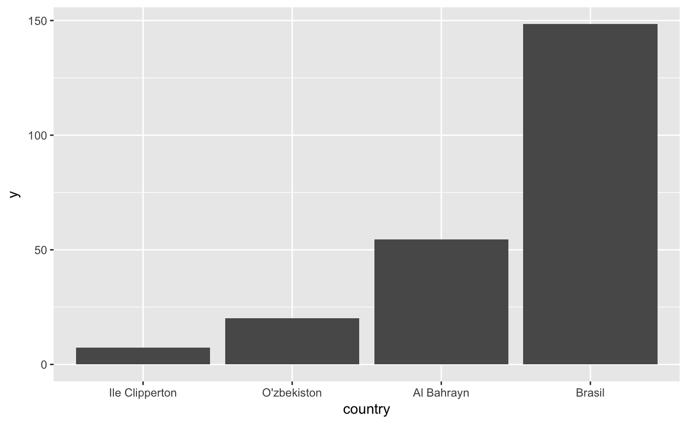

R/country_format.R
order_countries reorders a vector of countries, returning a result useful
for passing to ggplot2's scale functions' limits parameters.
order_countries(x, by, ..., from = "iso2c", short = TRUE, variant = FALSE, factor = is.factor(x))
| x | A character, factor, or numeric vector of country codes or names |
|---|---|
| by | Either a length-one country code from |
| ... | Parameters passed on to |
| from | Code format from which to convert. Defaults to |
| short | Whether to use short alternative name when available. Can be
length 1 or the same length as |
| variant | Whether to use variant alternative name when available. Can
be length 1 or the same length as |
| factor | If |
The original vector of countries, ordered according to the parameters
passed. Note that factors are not releveled, but are reordered. To
relevel, pass the results to levels<-()
order_countries orders a vector of countries by
itself converted to a country code or name if by is a code from codes
to which to convert
a sortable vector if by is a vector of the same length as x
x itself if neither is supplied.
To change labels of a discrete scale, pass the results of
country_format() to the labels parameter.
countries <- c("FR", "CP", "UZ", "BH", "BR") order_countries(countries)#> [1] "BH" "BR" "CP" "FR" "UZ"order_countries(countries, "ja")#> [1] "UZ" "CP" "BH" "BR" "FR"order_countries(countries, rnorm(5))#> [1] "UZ" "FR" "BH" "CP" "BR"order_countries(countries, grepl("F", countries), 1:5, decreasing = TRUE)#> [1] "FR" "BR" "BH" "UZ" "CP"if (require(ggplot2, quietly = TRUE)) { df_countries <- data.frame(country = countries, y = exp(1:5)) ggplot(df_countries, aes(country, y)) + geom_col() + scale_x_discrete( limits = order_countries(df_countries$country, df_countries$y)[df_countries$y > 5], labels = country_format(to = "en-cia-local") ) }#> Warning: Removed 1 rows containing missing values (position_stack).